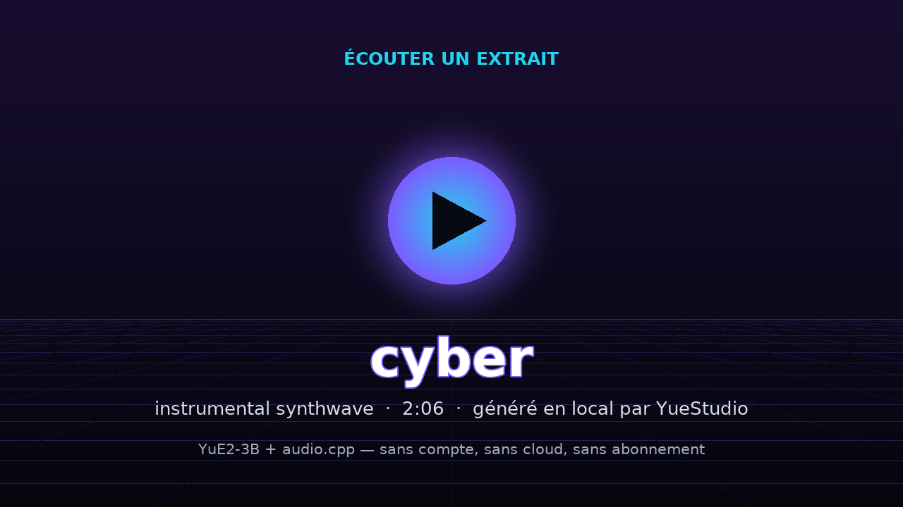

🎵 cyber — YueStudio
Instrumental synthwave · 2:06 · généré 100 % en local (YuE2-3B + audio.cpp)
sans compte
sans cloud
sans abonnement
[instrumental]
Style
Synthwave années 80, basse, nappes, rythme entraînant, chill
Paroles
[instrumental]
Ce morceau a été composé et joué entièrement sur un PC courant (i5-11400, 32 Go de RAM, RTX 2000 Ada 16 Go). Reproduisez-le chez vous avec la recette ci-dessus.